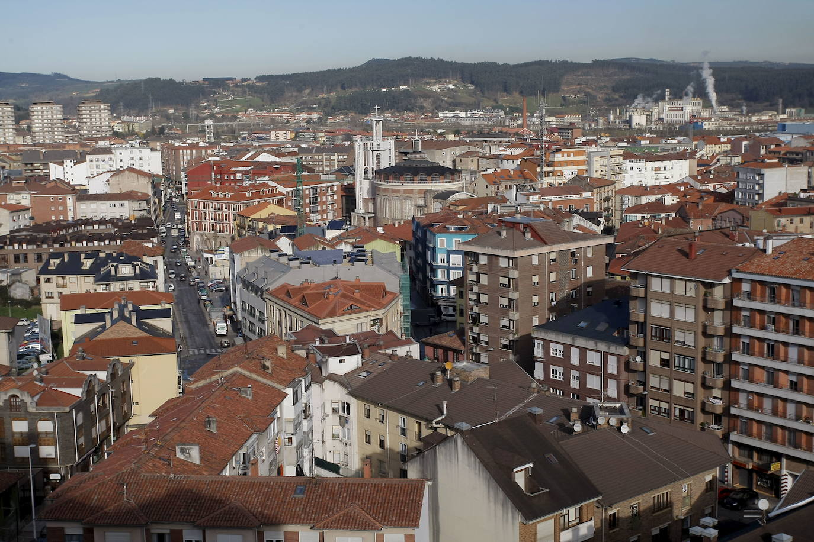
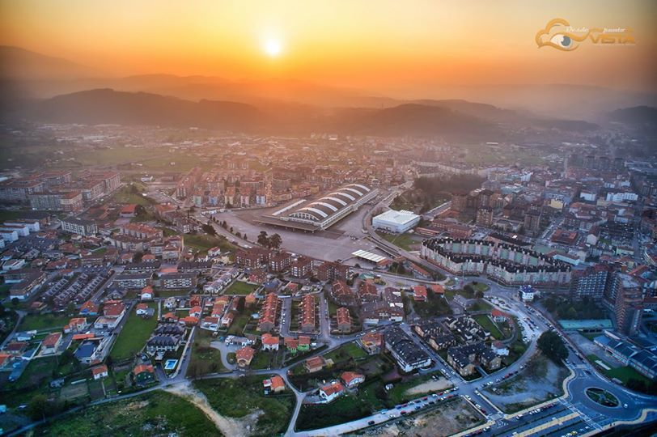
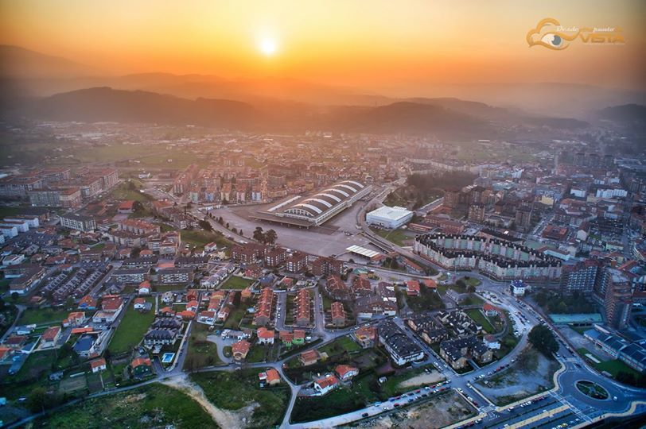

TORRELAVEGA
Torrelavega es un municipio y ciudad del norte de España. La ciudad es de carácter industrial y comercial, siendo el segundo núcleo urbano más relevante de la comunidad autónoma de Cantabria por detrás de la capital autonó mica Santander.
  

TORRELAVEGA |
|
| Conocido en sus inicios como Azucarera Montañesa y posteriormente como Lechera Montañesa, hoy se llama cariñosamente La Lechera al actual Recinto de Feria de Muestras de Cantabria, el cual cuenta con una extensión interior de 5.000 metros cuadrados y una superficie exterior de 23.000. | |